一、安装和配置
1.1 安装
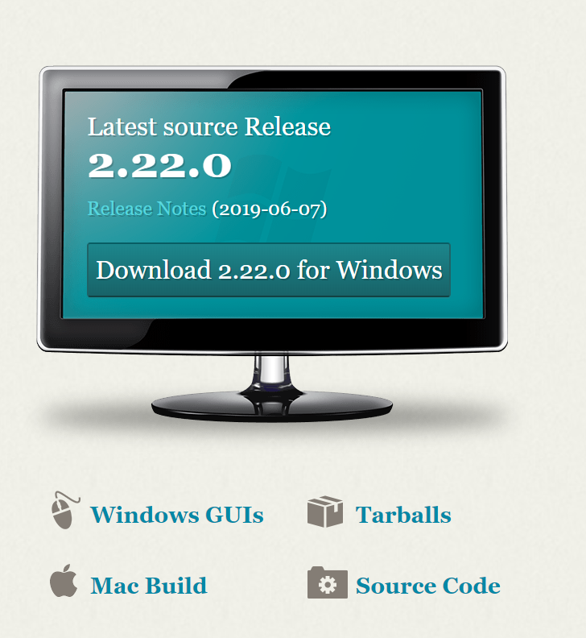
1.2 配置
在git bash下输入以下两个命令
1 | git config --global user.name "username" # username为GitHub的用户名 |
配置好账号信息后，输入git config -l或者git config --list查看配置
二、创建仓库
安装配置好git后，接下来便是使用咯，首先便是创建仓库。其中主要分为两种：初始化一个仓库、克隆他人的仓库
2.1 初始化
git 仓库初始化常用的技巧
1 | 直接创建一个目录，在该目录下输入 |
仓库初始化后，该目录会生成.git目录，可以输入ls -la查看仓库下所有的文件及文件夹
2.2 克隆
git clone常用技巧
1 | 直接克隆，会在当前路径生成一个仓库 |
三、基本用法
3.1 状态
git status用来查看仓库当前状态，主要可分为以下几个状态
| 状态 | 说明 |
|---|---|
| Untracked files | 存在未被追踪的文件 |
| modified | 存在未被追踪的已经修改的文件 |
| No commits yet | 还未提交 |
| Nothing to commit,working tree clean. | 已经没有可提交的文件 |
| Changes to be committed | 更改已被提交 |
3.2 添加跟踪
git add .、git add *或git add -A将所有修改添加到暂存区
3.3 提交
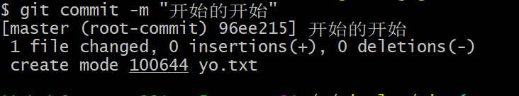
git commit -m "描述"提交并写注释-m就是给个说明
3.4 日志和切换版本
git log查看git日志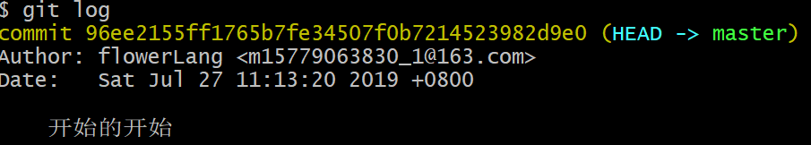
commit后的字符串：当前commit的版本ID
开始的开始：当前commit版本的说明信息
git log -p控制输出每个commit具体修改的内容，输出的形式以diff的形式给出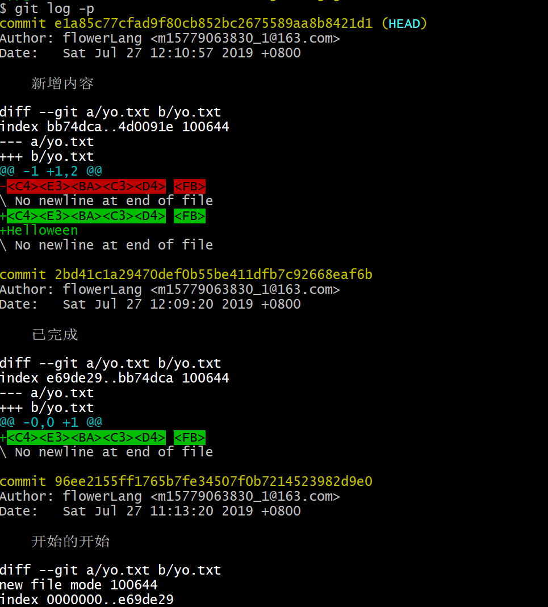
git checkout id切换到当初commit id的版本，id可为想要切换commit 的id前7位或者更长git checkout -回退到上一个节点
四、三个状态
仓库中的文件有三个状态：modified(已修改)、staged(已暂存)、commited(已提交)
commit的内容是暂存区的内容(add操作)，如果add之后有修改了内容，这次修改的内容不会被commit
五、tag标签
当项目有一个比较重要阶段（一个大大版本完成等等）时，希望能将其突出表示。这时，可将该结点标记为一个标签，与标签相关的命令如下。
5.1 git tag
command1 && command2连续执行命令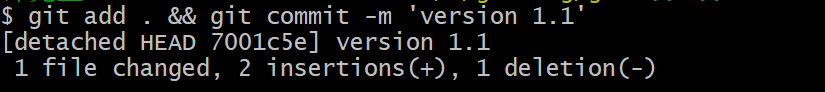
git tag -a tagname -m message (id)- tagname：标签名
- message：该标签的描述信息（与commit中的类似）
- id：commit历史版本的id（默认为当前所处版本id）
注意事项：添加了
-a属性后，才可以后接-m属性
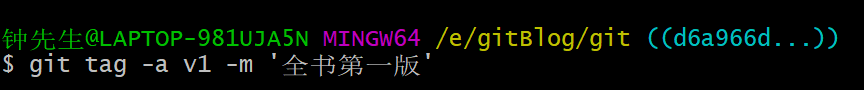
- 给v1之前的id(e1a85c7 )添加tag
git log --online简要显示日志
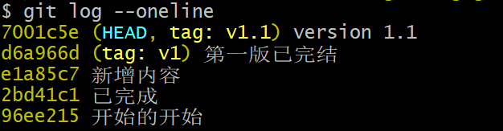
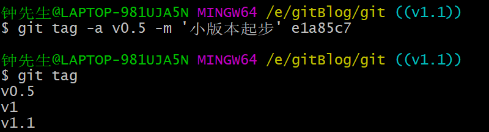
git tag显示仓库标签信息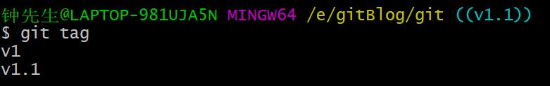
5.2 git show
git show tagname显示标签详细信息- tagname: 标签名称
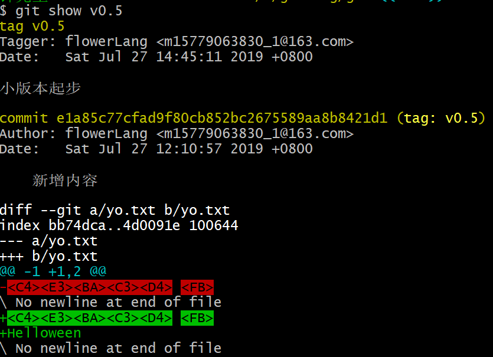
git checkout tagname回到tag所在版本
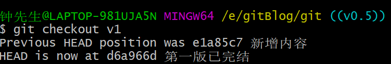
六、分支branch
当开发主线项目过程中突然想开发新功能或者修复之前版本遗留bug，但又不想影响主线任务时，创建分支出去处理这些事最好不过。关于分支有以下相关操作
6.1 创建分支
git branch branchname- branchname：分支名称（默认分支为master）
6.2 切换分支
git checkout branchname- branchname：要切换分支名称
6.3 图形化显示
git log --graph
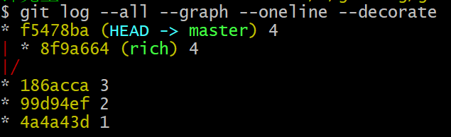
6.4 创建并切换至分支
git checkout -b branchname- branchname：要创建分支名称
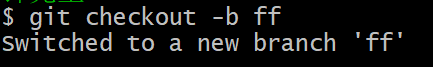
七、合并分支
当分支功能开发完毕后，需将该分支合并至主线上，进行磨合，这时，合并分支派上用场，主要命令为
git merge
注意：在合并分支前要切换至要合并至分支的分支，例如将rich分支合并至master主干，则应 git checkout master 切换至master主干，再进行合并
git merge brachname- branchname：要合并分支名称
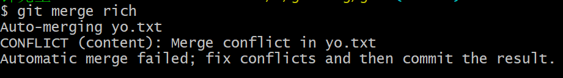
打开文件
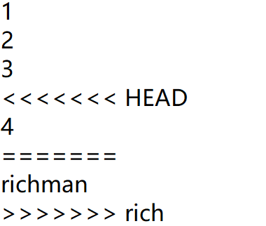
可以发现，在尖括号之间是主线和分支之间的区别，由于此处为自己的代码，可以手工修改
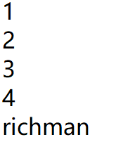
再次上传就ok了
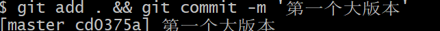
查看日志
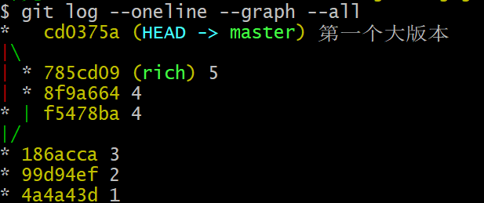
七、远程仓库
git对于版本管理功能强大，但一旦本地主机出现故障，便功亏一篑。使用远程仓库将本地仓库上传则不会受到主观因素影响。常用的远程仓库为GitHub，因此这里以GitHub为例，演示如何将本地仓库上传至GitHub。
7.1 添加仓库
git remote add remoteName url添加远程仓库- remoteName：仓库名称
- url：远程仓库的url
git remote列出所有远程仓库git remote -v显示远程仓库详细信息
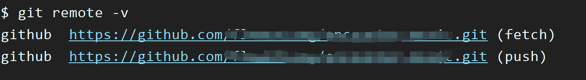
其中fetch为下载地址，使用 git clone url 即可；push则为上传地址。一般为同一个url
7.2 将本地仓库上传
git push -u remoteName branchName将本地仓库上传- remoteName：远程仓库名称（github）
- brachName：要上传的分支名称（master）
7.3 克隆仓库
已将本地仓库上传远程仓库的情况下，若出现本地仓库丢失，可从远程仓库克隆下来
git clone url- url：远程仓库url
会从远程仓库download到本地主机，但是得注意此时的远程仓库名称不是之前的命名，而是
origin，所以在push操作时应当注意remoteName。git clone url filename- url：远程仓库url
- filename：重命名远程仓库文件名
八、速查表